INIT-2026-05-30-claude-trail-compact-flag
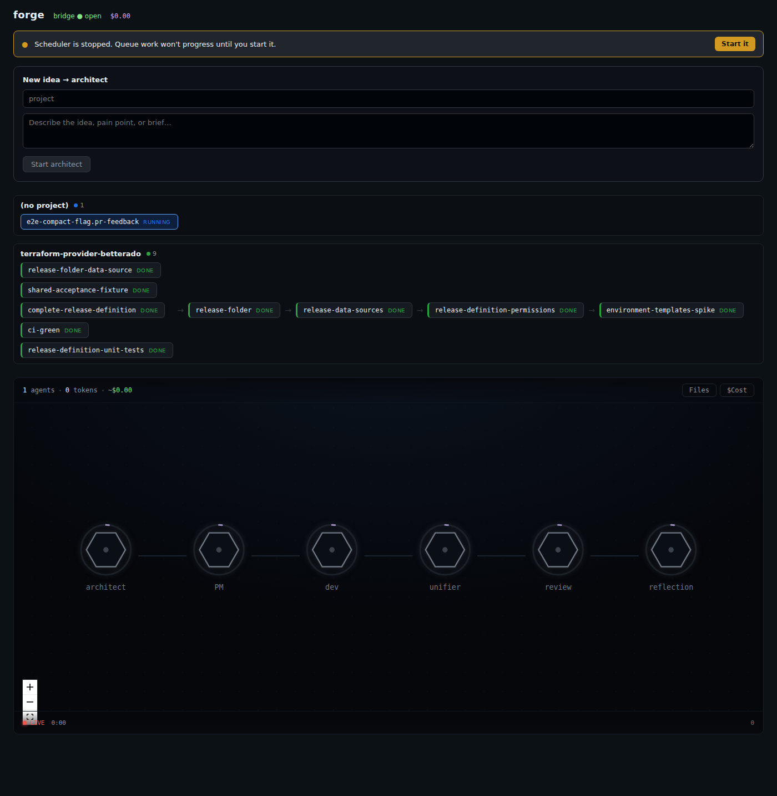
01-initial-load.png02-cycle-focused.png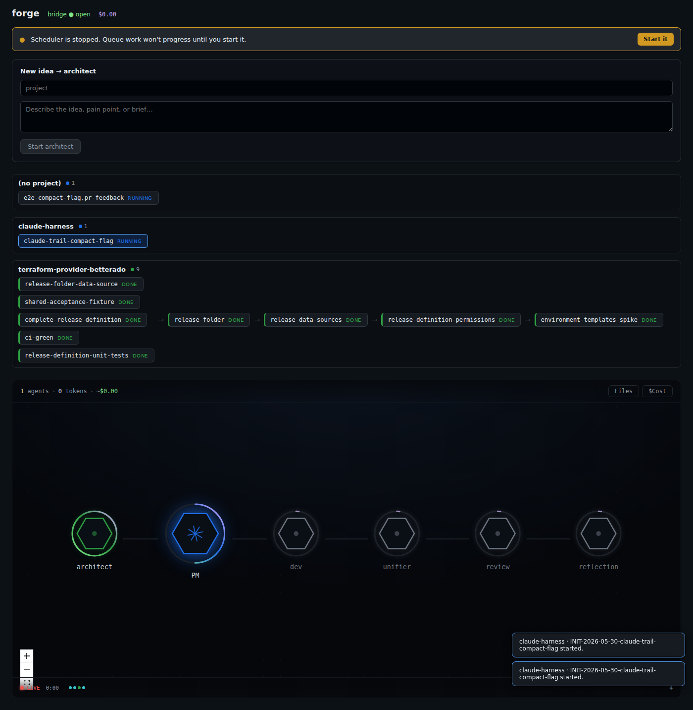
03-architect-complete.png04-project-manager-active.png05-developer-loop-pending.png06-unifier-pending.png07-review-loop-pending.png08-reflection-pending.png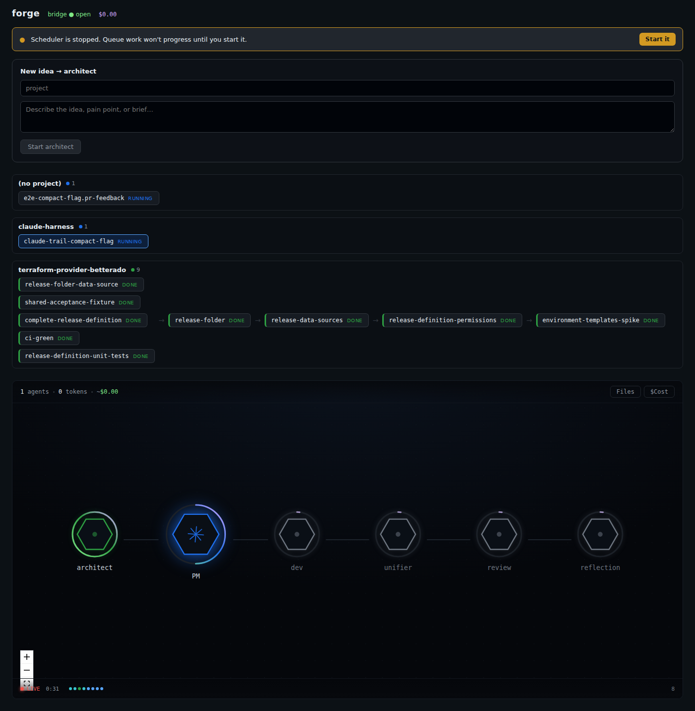
09-decision-cost-and-tokens.png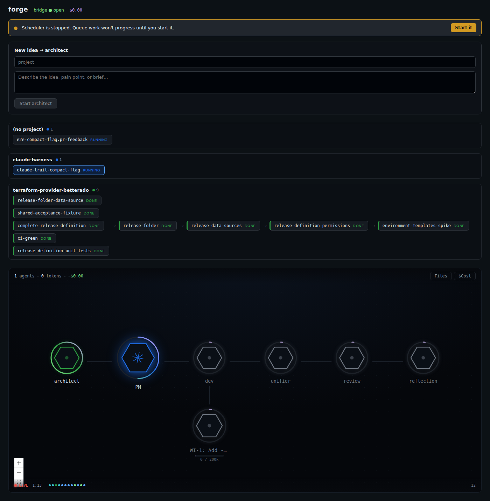
10-decision-pm-work-items.png11-project-manager-complete.png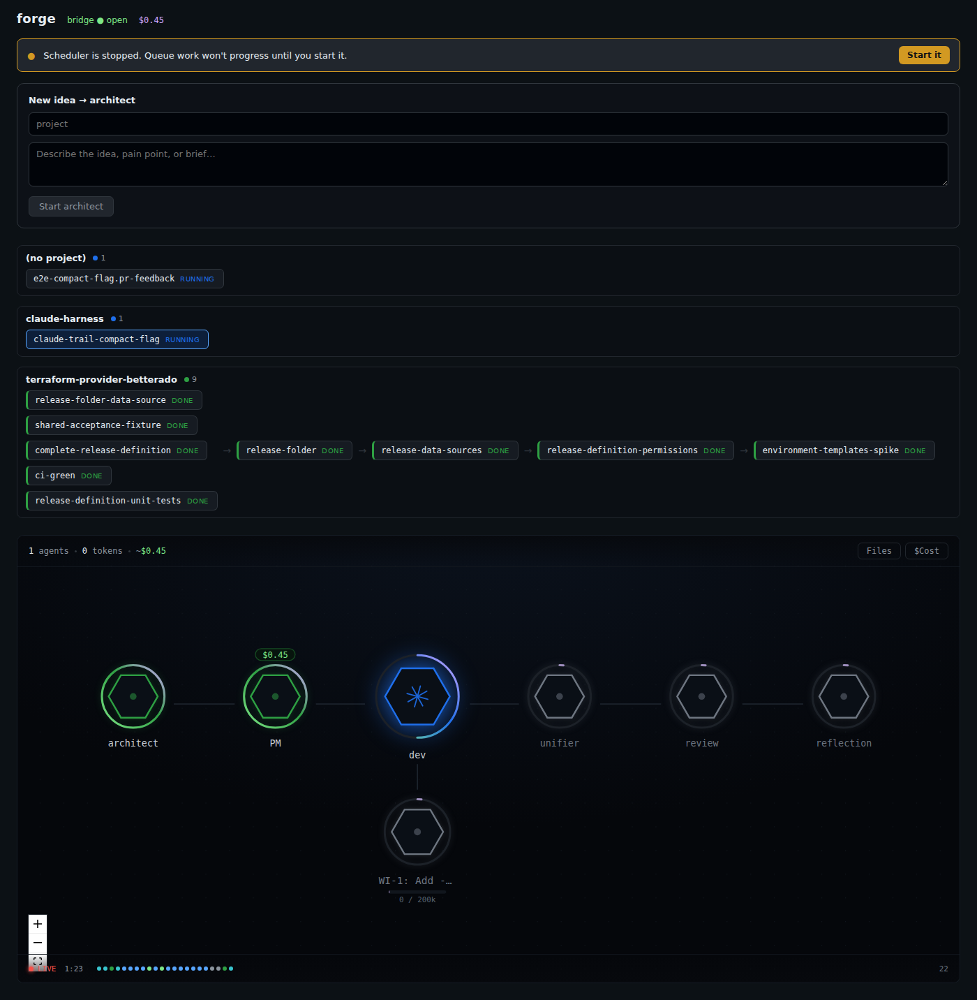
12-developer-loop-active.png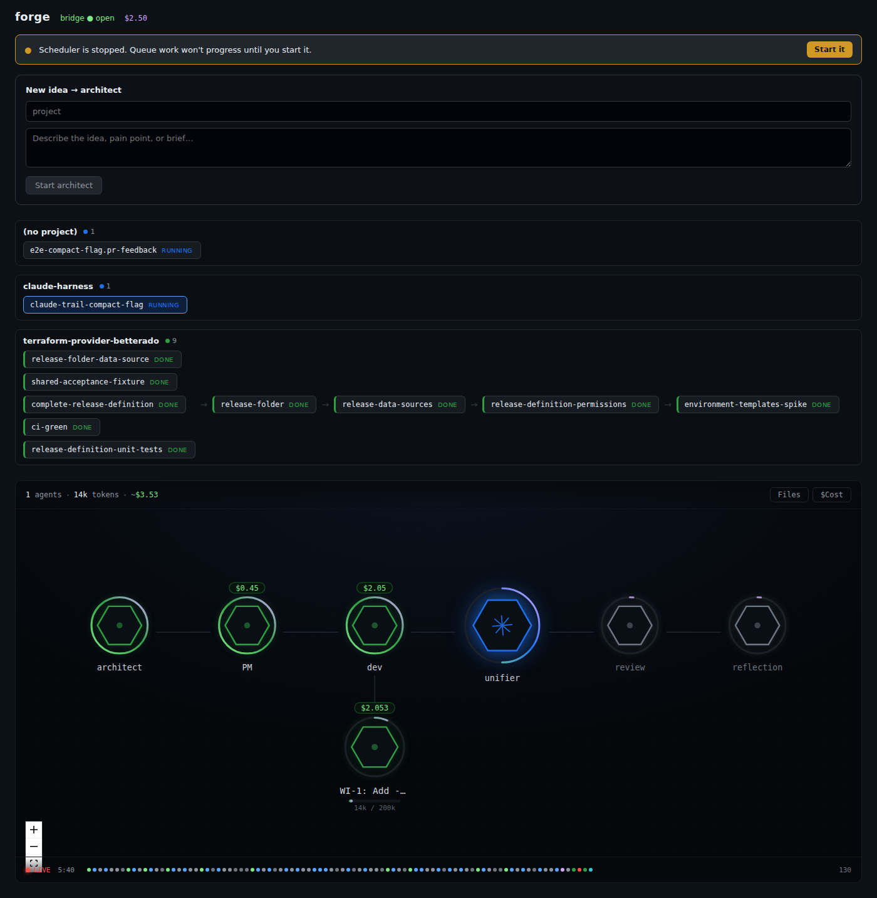
13-developer-loop-complete.png14-unifier-active.png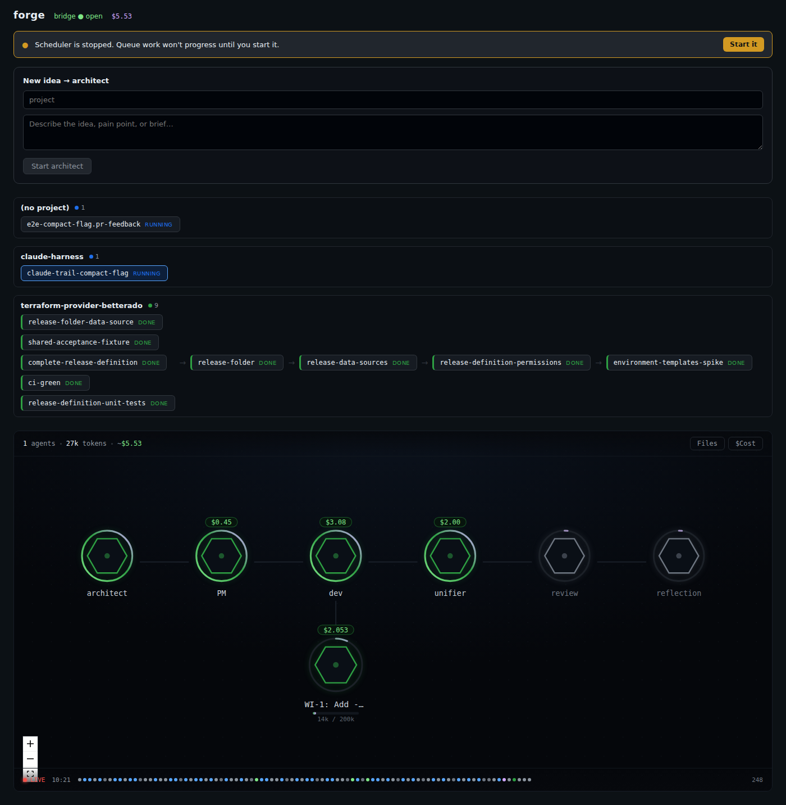
15-unifier-complete.png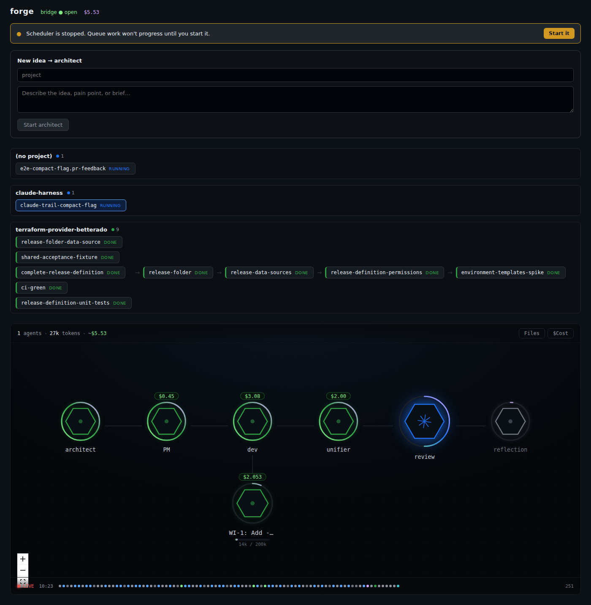
16-review-loop-active.png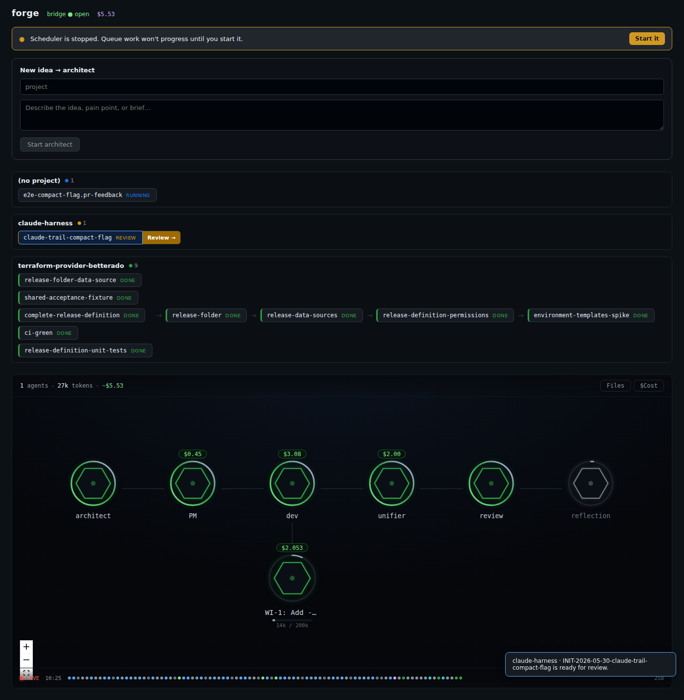
17-after-serve-ready-for-review.png18-decision-review-evaluation.png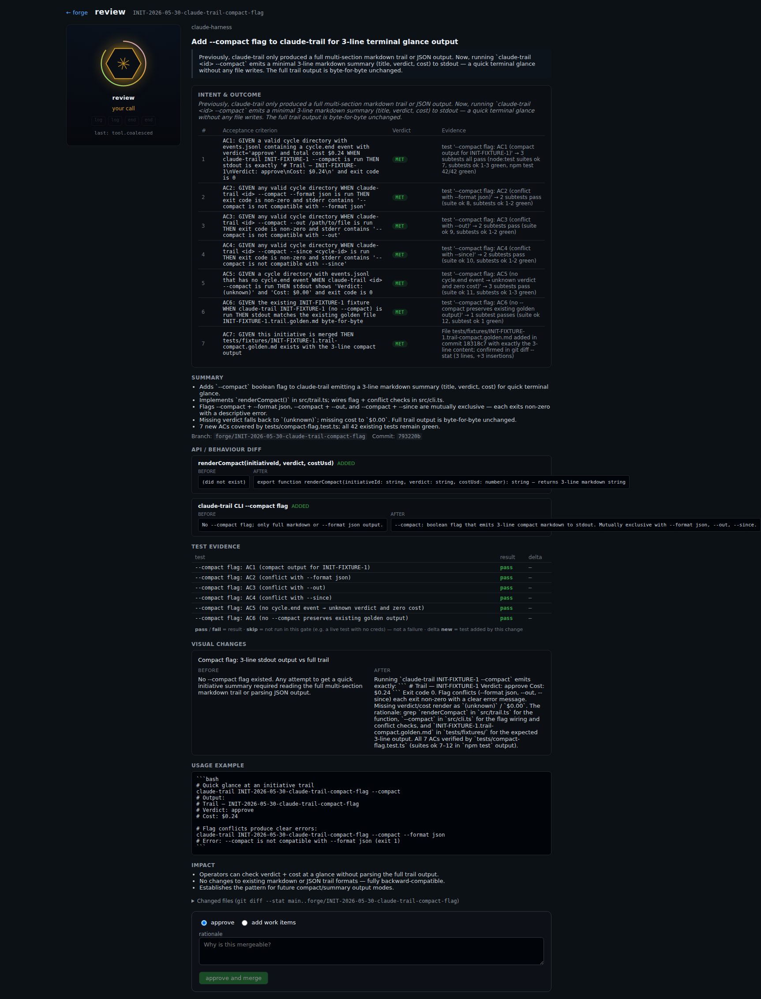
19-decision-send-back.png20-decision-re-review.png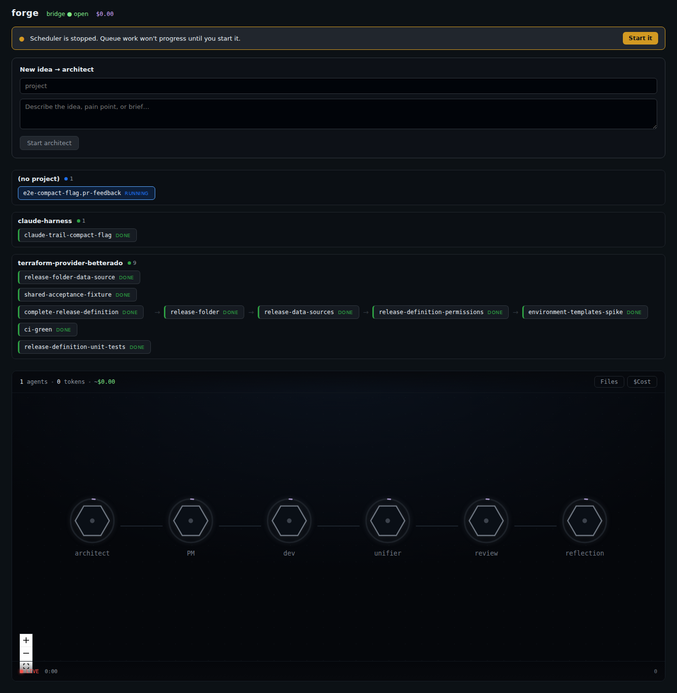
21-final-state.png